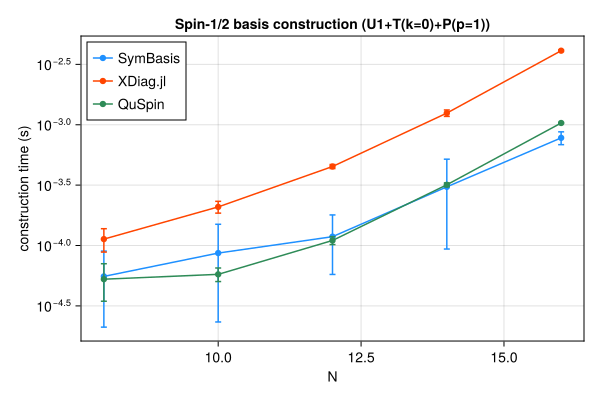
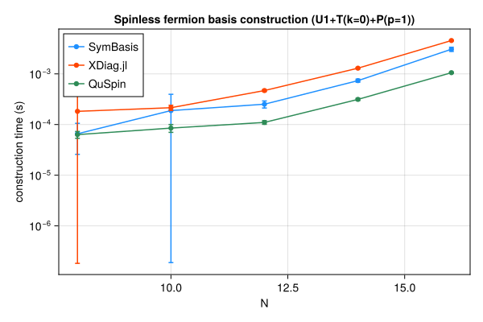
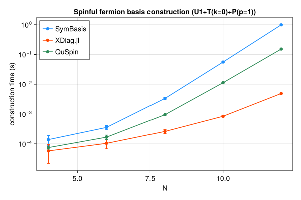
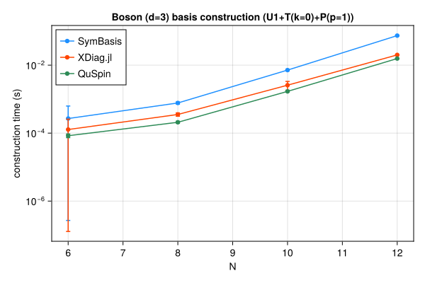

Symmetry-resolved basis construction and representative-state lookup speed, compared against XDiag.jl and QuSpin. SymBasis is benchmarked against its own dev checkout; XDiag.jl and QuSpin are whatever their latest released versions were at the time this page was generated. Regenerated automatically on every SymBasis release.
Threads are left at each library's own defaults (JULIA_NUM_THREADS=auto, OMP_NUM_THREADS unset) rather than pinned to 1 – these numbers reflect out-of-the-box performance, not a strictly single-threaded comparison.
Sweep: BENCH_SWEEP=quick
plot_construction("spin", "Spin-1/2")

| N | config | dim | SymBasis | XDiag | QuSpin | XDiag/SymBasis | QuSpin/SymBasis |
|---|
| 8 | U1 | 70 | 2.936e-05 ± 3.5e-05 s | 3.784e-06 ± 6.2e-06 s | 3.383e-05 ± 1.1e-05 s | 0.13x | 1.15x |
| 8 | U1+T(k=0) | 10 | 8.799e-05 ± 7.5e-05 s | 4.699e-05 ± 2.6e-05 s | 4.643e-05 ± 9.7e-06 s | 0.53x | 0.53x |
| 8 | U1+T(k=0)+P(p=1) | 8 | 5.548e-05 ± 3.4e-05 s | 0.000113 ± 2.5e-05 s | 5.26e-05 ± 1.8e-05 s | 2.04x | 0.95x |
| 10 | U1 | 252 | 3.741e-05 ± 3.2e-05 s | 4.328e-06 ± 6.4e-06 s | 3.594e-05 ± 1e-05 s | 0.12x | 0.96x |
| 10 | U1+T(k=0) | 26 | 5.042e-05 ± 2.1e-05 s | 0.000251 ± 0.00054 s | 4.796e-05 ± 7.2e-06 s | 4.98x | 0.95x |
| 10 | U1+T(k=0)+P(p=1) | 16 | 8.658e-05 ± 6.3e-05 s | 0.0002088 ± 2.3e-05 s | 5.771e-05 ± 7.4e-06 s | 2.41x | 0.67x |
| 12 | U1 | 924 | 0.0003056 ± 0.00016 s | 3.895e-06 ± 6.2e-06 s | 4.255e-05 ± 6.3e-06 s | 0.01x | 0.14x |
| 12 | U1+T(k=0) | 80 | 0.0004257 ± 0.00046 s | 0.0002504 ± 2.8e-05 s | 8.763e-05 ± 9e-06 s | 0.59x | 0.21x |
| 12 | U1+T(k=0)+P(p=1) | 50 | 0.0001184 ± 6.1e-05 s | 0.0004511 ± 1.7e-05 s | 0.0001101 ± 8.3e-06 s | 3.81x | 0.93x |
| 14 | U1 | 3432 | 0.0001255 ± 3.9e-05 s | 4.679e-06 ± 6.1e-06 s | 6.363e-05 ± 9e-06 s | 0.04x | 0.51x |
| 14 | U1+T(k=0) | 246 | 0.0001612 ± 4.7e-05 s | 0.0008442 ± 3e-05 s | 0.0002182 ± 1.9e-05 s | 5.24x | 1.35x |
| 14 | U1+T(k=0)+P(p=1) | 133 | 0.000306 ± 0.00021 s | 0.001249 ± 7.7e-05 s | 0.0003183 ± 1.2e-05 s | 4.08x | 1.04x |
| 16 | U1 | 12870 | 0.0004133 ± 0.0002 s | 5.979e-06 ± 7.5e-06 s | 0.0001408 ± 1.3e-05 s | 0.01x | 0.34x |
| 16 | U1+T(k=0) | 810 | 0.0005792 ± 0.00052 s | 0.003269 ± 6.9e-05 s | 0.0006795 ± 1.1e-05 s | 5.64x | 1.17x |
| 16 | U1+T(k=0)+P(p=1) | 440 | 0.0007788 ± 9.5e-05 s | 0.004104 ± 6.6e-05 s | 0.001034 ± 9.7e-06 s | 5.27x | 1.33x |
| N | config | nsamples | SymBasis | XDiag | QuSpin |
|---|
| 16 | U1+T(k=0)+P(p=1) | 10000 | 2.673e-07 ± 5.6e-09 s | N/A (no decoupled API) | 2.052e-07 ± 1.2e-07 s |
plot_construction("fermion", "Spinless fermion")

| N | config | dim | SymBasis | XDiag | QuSpin | XDiag/SymBasis | QuSpin/SymBasis |
|---|
| 8 | U1 | 70 | 6.825e-05 ± 8e-05 s | 3.699e-06 ± 6.2e-06 s | 4.756e-05 ± 1.1e-05 s | 0.05x | 0.70x |
| 8 | U1+T(k=0) | 9 | 7.971e-05 ± 5.3e-05 s | 4.922e-05 ± 2.6e-05 s | 5.55e-05 ± 9.3e-06 s | 0.62x | 0.70x |
| 8 | U1+T(k=0)+P(p=1) | 6 | 6.572e-05 ± 4e-05 s | 0.0001823 ± 0.00024 s | 6.325e-05 ± 9.8e-06 s | 2.77x | 0.96x |
| 10 | U1 | 252 | 0.0001039 ± 0.00012 s | 4.88e-06 ± 6.9e-06 s | 4.643e-05 ± 8.8e-06 s | 0.05x | 0.45x |
| 10 | U1+T(k=0) | 26 | 6.883e-05 ± 3.2e-05 s | 0.0001057 ± 2.2e-05 s | 7.142e-05 ± 1.2e-05 s | 1.54x | 1.04x |
| 10 | U1+T(k=0)+P(p=1) | 16 | 0.0001886 ± 0.00021 s | 0.0002148 ± 2.5e-05 s | 8.511e-05 ± 1.5e-05 s | 1.14x | 0.45x |
| 12 | U1 | 924 | 0.0001539 ± 0.00022 s | 4.696e-06 ± 6.5e-06 s | 5.453e-05 ± 8.2e-06 s | 0.03x | 0.35x |
| 12 | U1+T(k=0) | 76 | 0.0001259 ± 3.3e-05 s | 0.0002882 ± 3.5e-05 s | 0.0001066 ± 2e-05 s | 2.29x | 0.85x |
| 12 | U1+T(k=0)+P(p=1) | 33 | 0.0002519 ± 4e-05 s | 0.0004684 ± 2.1e-05 s | 0.0001102 ± 9.1e-06 s | 1.86x | 0.44x |
| 14 | U1 | 3432 | 0.0002673 ± 0.00024 s | 5.11e-06 ± 6.4e-06 s | 6.101e-05 ± 1.3e-05 s | 0.02x | 0.23x |
| 14 | U1+T(k=0) | 246 | 0.000375 ± 3.4e-05 s | 0.0009599 ± 3.5e-05 s | 0.000207 ± 1.4e-05 s | 2.56x | 0.55x |
| 14 | U1+T(k=0)+P(p=1) | 113 | 0.0007353 ± 5.1e-05 s | 0.001295 ± 4.5e-05 s | 0.0003135 ± 1.6e-05 s | 1.76x | 0.43x |
| 16 | U1 | 12870 | 0.0005018 ± 0.00033 s | 6.963e-06 ± 8.3e-06 s | 0.0001417 ± 8.8e-06 s | 0.01x | 0.28x |
| 16 | U1+T(k=0) | 809 | 0.001368 ± 0.00029 s | 0.003791 ± 7.7e-05 s | 0.0006838 ± 2.4e-05 s | 2.77x | 0.50x |
| 16 | U1+T(k=0)+P(p=1) | 422 | 0.003062 ± 0.00029 s | 0.004547 ± 8.1e-05 s | 0.001056 ± 2.9e-05 s | 1.49x | 0.34x |
| N | config | nsamples | SymBasis | XDiag | QuSpin |
|---|
| 16 | U1+T(k=0)+P(p=1) | 10000 | 1.694e-06 ± 2.2e-08 s | N/A (no decoupled API) | 1.749e-06 ± 2.5e-08 s |
plot_construction("spinful_fermion", "Spinful fermion")

| N | config | dim | SymBasis | XDiag | QuSpin | XDiag/SymBasis | QuSpin/SymBasis |
|---|
| 4 | U1 | 36 | 6.727e-05 ± 5.5e-05 s | 5.264e-06 ± 8e-06 s | 5.932e-05 ± 1.6e-05 s | 0.08x | 0.88x |
| 4 | U1+T(k=0) | 10 | 0.0005935 ± 0.00071 s | 3.32e-05 ± 3.1e-05 s | 7.359e-05 ± 2.3e-05 s | 0.06x | 0.12x |
| 4 | U1+T(k=0)+P(p=1) | 6 | 0.0001384 ± 5.2e-05 s | 5.769e-05 ± 3.6e-05 s | 7.466e-05 ± 8.3e-06 s | 0.42x | 0.54x |
| 6 | U1 | 400 | 0.0004783 ± 0.00057 s | 4.91e-06 ± 8.3e-06 s | 6.365e-05 ± 7.7e-06 s | 0.01x | 0.13x |
| 6 | U1+T(k=0) | 68 | 0.0002025 ± 3.9e-05 s | 5.057e-05 ± 3.6e-05 s | 0.00012 ± 9.3e-06 s | 0.25x | 0.59x |
| 6 | U1+T(k=0)+P(p=1) | 38 | 0.0003551 ± 5.8e-05 s | 0.0001036 ± 3.6e-05 s | 0.000167 ± 2.9e-05 s | 0.29x | 0.47x |
| 8 | U1 | 4900 | 0.0007151 ± 0.00027 s | 5.126e-06 ± 8.6e-06 s | 0.0001187 ± 1.1e-05 s | 0.01x | 0.17x |
| 8 | U1+T(k=0) | 618 | 0.002046 ± 0.00035 s | 0.0001135 ± 3.9e-05 s | 0.0005298 ± 1.4e-05 s | 0.06x | 0.26x |
| 8 | U1+T(k=0)+P(p=1) | 318 | 0.003339 ± 0.00022 s | 0.0002605 ± 3.7e-05 s | 0.0009496 ± 3.3e-05 s | 0.08x | 0.28x |
| 10 | U1 | 63504 | 0.007655 ± 0.00027 s | 5.649e-06 ± 9e-06 s | 0.001018 ± 3.5e-05 s | 0.00x | 0.13x |
| 10 | U1+T(k=0) | 6352 | 0.03179 ± 0.00071 s | 0.000398 ± 3.2e-05 s | 0.006142 ± 0.00021 s | 0.01x | 0.19x |
| 10 | U1+T(k=0)+P(p=1) | 3212 | 0.05573 ± 0.0015 s | 0.0008409 ± 4.6e-05 s | 0.01126 ± 0.00015 s | 0.02x | 0.20x |
| 12 | U1 | 853776 | 0.1227 ± 0.017 s | 6.615e-06 ± 9.7e-06 s | 0.01416 ± 4.8e-05 s | 0.00x | 0.12x |
| 12 | U1+T(k=0) | 71188 | 0.5886 ± 0.019 s | 0.00194 ± 6.4e-05 s | 0.08294 ± 0.00065 s | 0.00x | 0.14x |
| 12 | U1+T(k=0)+P(p=1) | 35694 | 0.9903 ± 0.012 s | 0.004889 ± 0.00015 s | 0.1521 ± 0.00034 s | 0.00x | 0.15x |
| N | config | nsamples | SymBasis | XDiag | QuSpin |
|---|
| 12 | U1+T(k=0)+P(p=1) | 10000 | 1.212e-05 ± 1.3e-07 s | N/A (no decoupled API) | 2.068e-06 ± 2.8e-08 s |
plot_construction("boson", "Boson (d=3)")

| N | config | dim | SymBasis | XDiag | QuSpin | XDiag/SymBasis | QuSpin/SymBasis |
|---|
| 6 | U1 | 141 | 5.101e-05 ± 2.9e-05 s | 4.489e-06 ± 6e-06 s | 5.789e-05 ± 1.1e-05 s | 0.09x | 1.13x |
| 6 | U1+T(k=0) | 26 | 0.0001093 ± 2.8e-05 s | 5.667e-05 ± 2.6e-05 s | 7.51e-05 ± 1.3e-05 s | 0.52x | 0.69x |
| 6 | U1+T(k=0)+P(p=1) | 18 | 0.0002693 ± 0.00036 s | 0.0001278 ± 0.00013 s | 8.397e-05 ± 1e-05 s | 0.47x | 0.31x |
| 8 | U1 | 1107 | 0.0002558 ± 0.00012 s | 6.08e-06 ± 6.4e-06 s | 9.215e-05 ± 9.1e-06 s | 0.02x | 0.36x |
| 8 | U1+T(k=0) | 142 | 0.0004571 ± 4.1e-05 s | 0.0002314 ± 3.2e-05 s | 0.0002186 ± 2e-05 s | 0.51x | 0.48x |
| 8 | U1+T(k=0)+P(p=1) | 84 | 0.0007723 ± 5.8e-05 s | 0.0003541 ± 4e-05 s | 0.0002087 ± 1.4e-05 s | 0.46x | 0.27x |
| 10 | U1 | 8953 | 0.001211 ± 0.00018 s | 1.129e-05 ± 1.1e-05 s | 0.0002701 ± 9.9e-06 s | 0.01x | 0.22x |
| 10 | U1+T(k=0) | 902 | 0.004215 ± 0.00043 s | 0.001813 ± 6.2e-05 s | 0.001411 ± 5.2e-05 s | 0.43x | 0.33x |
| 10 | U1+T(k=0)+P(p=1) | 486 | 0.00717 ± 0.00039 s | 0.002577 ± 0.00075 s | 0.001694 ± 6.2e-05 s | 0.36x | 0.24x |
| 12 | U1 | 73789 | 0.01044 ± 0.00046 s | 2.618e-05 ± 8.6e-06 s | 0.001982 ± 5.9e-05 s | 0.00x | 0.19x |
| 12 | U1+T(k=0) | 6166 | 0.04765 ± 0.0015 s | 0.0175 ± 0.00042 s | 0.01327 ± 0.00031 s | 0.37x | 0.28x |
| 12 | U1+T(k=0)+P(p=1) | 3179 | 0.07417 ± 0.0017 s | 0.02006 ± 0.00011 s | 0.01567 ± 7.8e-05 s | 0.27x | 0.21x |
| N | config | nsamples | SymBasis | XDiag | QuSpin |
|---|
| 12 | U1+T(k=0)+P(p=1) | 10000 | 6.227e-06 ± 6.7e-08 s | N/A (no decoupled API) | 2.96e-07 ± 7.7e-09 s |